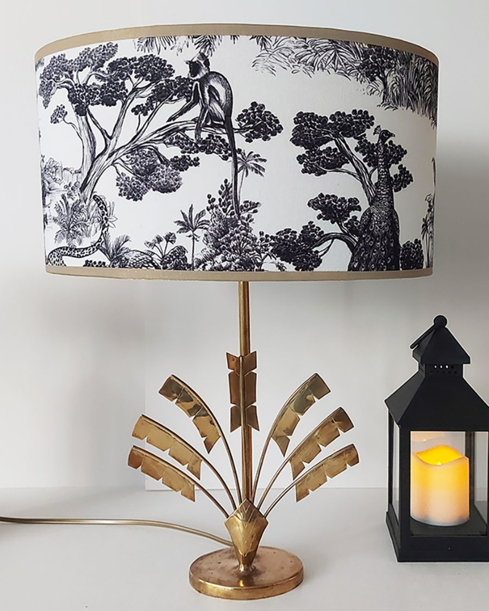
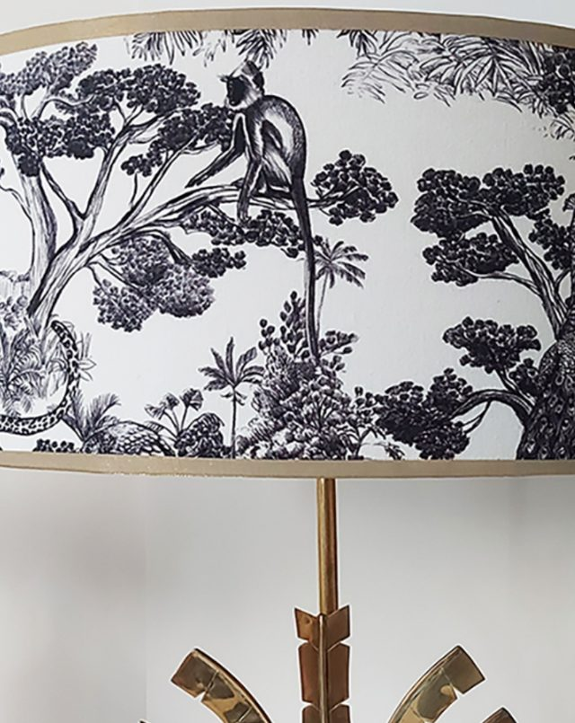
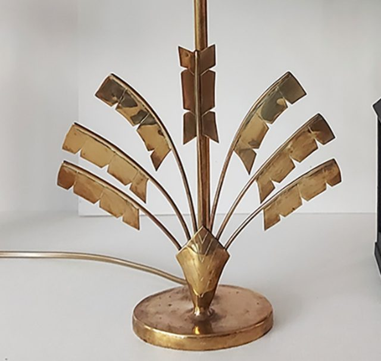

Accueil / Lampes / Alizée Canopée



Il est 20h, Miss Flower · nouvelle recrue
Alizée
Canopée
lampe, pied en cuivre et abat-jour en velours Thévenon
Prix à renseigner · pièce unique
Une jungle de singe, de paon et de serpent qui s'éclaire le soir venu. Seconde vie de premier rôle.
Le rôle
Elle a fait ses débuts dans les années 60, sur un pied de cuivre en éventail de palmes, du genre qu'on ne trouvait que dans les salons où l'on savait recevoir. Puis la mode a changé et on l'a oubliée dans un coin.
Je lui ai offert un nouveau costume : un velours de la maison parisienne Thévenon, motif Animalia. Un singe guette depuis sa branche, un paon fait la roue et un serpent se faufile entre les feuillages. Toute une jungle en noir et blanc, qui s'illumine dès que le soir tombe.
Elle sait tenir la scène. Sur une console, un chevet ou un coin de bibliothèque, elle prend toute la place sans jamais couvrir les autres.
Matière et état
Pied en cuivre style Hollywood Regency, années 60. Abat-jour en velours de la maison Thévenon, motif « Animalia ».
Dimensions
Largeur 36 cm
Hauteur de l'abat-jour 18 cm
Hauteur totale 45 cm
Le programme dans ta boîte aux lettres
Les nouvelles recrues de la troupe et leurs histoires. Une lettre à la fois.